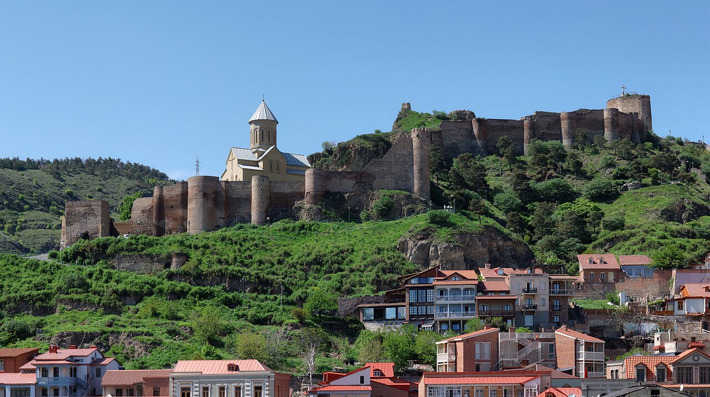
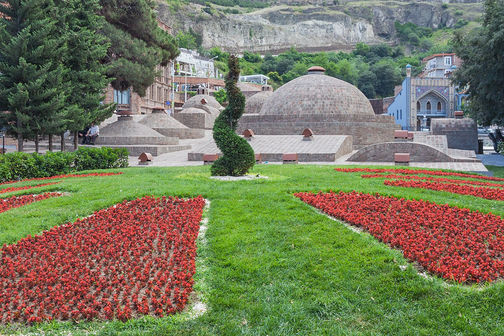
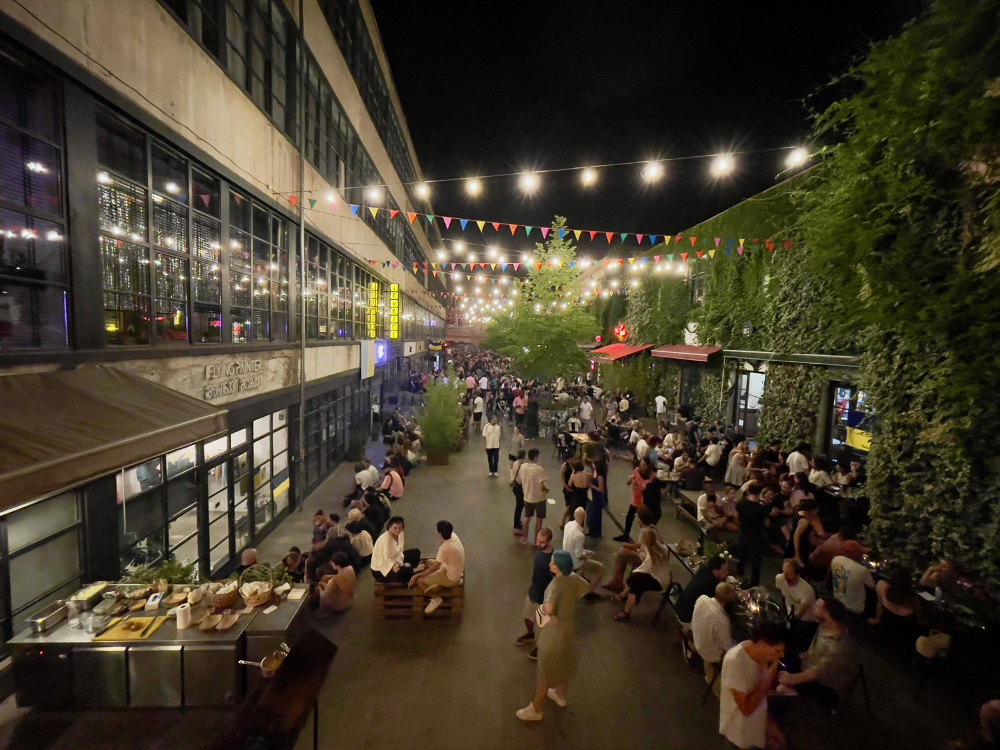

☕ Breakfast at Castle in Old Town
3 Betlemi Rise· breakfast included
Eat slowly on the rooftop or in the garden — the property has views down the lanes and across to Narikala. Refill the water bottle; the morning's a climb.

A whole day to belong to the city — climb the fortress, soak the road out of your shoulders in a sulphur bath, eat where the locals eat, then cross the river and watch the new Tbilisi — the one with neon and natural wine — set the tone for the evening.
Eat slowly on the rooftop or in the garden — the property has views down the lanes and across to Narikala. Refill the water bottle; the morning's a climb.
Skip the Rike cable car queue — the steps right outside your door deliver you to the ramparts in half an hour. Walk the walls; the whole of old Tbilisi unfolds below: orange roofs, the Mtkvari, Sameba's gold dome on the far side.
20-metre aluminium woman holding a bowl of wine in one hand for friends, a sword in the other for enemies. Quintessentially Georgian. Walk the ridge between the two; the views go on.
The connoisseur's pick over the touristy Chreli-Abano. Private rooms with old peacock-and-pheasant mosaics, hot sulphur water that smells faintly of struck matches. A real Georgian bathhouse experience — book ahead, request a kisi scrub if you want the full treatment.

Reviewers call it "possibly Tbilisi's prettiest restaurant" — fresh, airy, modern Georgian. Order a mix khinkali, a salata mtsvanili, and a glass of saperavi.
Across the Mtkvari. Different city up here — Soviet-era buildings, ivy, graffiti, design shops.
An old Soviet sewing factory turned design hub — coffee, vintage shops, slow afternoon people-watching in the courtyard. Some say it's an inauthentic imitation of the counter-culture scene it claims; either way, it's a nice place to sit.

A flea market that's half junk shop, half living museum of the 20th century — Soviet medals, samovars, hand-painted ceramics, old icons, vintage cameras, a man selling 4 spoons and an ushanka. Best on weekends but always something to find. Don't pay sticker price.
"Black Lion" — the modern-supra place loved by everyone who comes back twice. Old courtyard, vine-shaded garden, contemporary takes on Georgian classics: walnut-stuffed eggplant rolls, chakapuli, slow-braised lamb. Order one bottle of orange wine and trust the waiter.
If still in the mood: one last glass at Vino Underground on the walk home — 2 min from the hotel and open late.